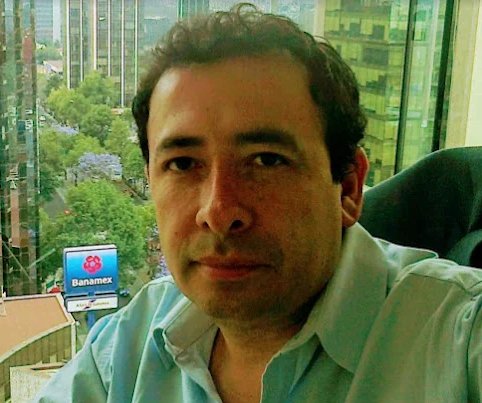
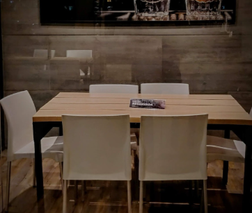

Psychologist Daniel Machuca
Behavior Change
WhatsApp: 55 7627 4720

Del Valle - Roma - Condesa.
Consultation: $380.
Approximate duration: 60 minutes.
By appointment only.
Location: Insurgentes Sur 819, near the Nápoles Metrobus station.
About Behavior Change:
Is a set of recommendations for individuals eager to align everyday actions with enduringly valued goals. We propose the process model of behavior change as a parsimonious framework for organizing strategies according to where they have their primary impact in the generation of behavioral impulses. To begin, individuals exist in objective situations, only certain features of which attract attention, which in turn lead to subjective appraisals, then finally give rise to response tendencies. Unhealthy habits develop when conflicting impulses are consistently resolved in favor of momentary temptations instead of valued goals. To change behavior for the better, we can strategically modify objective situations, where we pay attention, how we construct appraisals, and how we enact responses. Crucially, behavior change strategies can be initiated either by the individual (i.e., self-control) or by others (e.g., a benevolent employer).